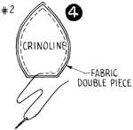
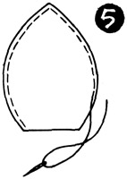
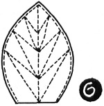

1952—How to Make Hats
by Ruby Carnahan
Self Trimmings
SELF TRIMMINGS
Trace pattern No. 1. Lay pattern on elastic net. Mark around pattern and cut out elastic net foundation.
Lay pattern on a double piece of fabric. Mark around pattern on fabric and allow 1/2" and cut out fabric.
(Illus. 1) Turn fabric over edge of foundation and sew fabric down around edge of foundation.
Baste fabric piece to other side, turn in edge of fabric and slip stitch around edge of foundation (Illus. 2).
 (Illus. 3). Start 1/4" from outer edge of ornament and machine stitch row
after row following outline of ornament until entire ornament surface is covered
with rows of stitching. Steam press ornament. To make this ornament of felt
cut out two pieces of felt like pattern and glue felt pieces together with
Milliner's Glue.
(Illus. 3). Start 1/4" from outer edge of ornament and machine stitch row
after row following outline of ornament until entire ornament surface is covered
with rows of stitching. Steam press ornament. To make this ornament of felt
cut out two pieces of felt like pattern and glue felt pieces together with
Milliner's Glue.
Trace pattern No. 2 and lay pattern on crinoline. Mark around pattern on crinoline and cut out. (Illus. 4) Baste crinoline on wrong side of a double piece of fabric around outer edge and stitch on machine.
Pull ornament right side out and baste around edge of ornament (Illus. 5) and stitch.
(Illus. 6) Stitch center of ornament as illustration.
TO MAKE TUBING FOR CENTER OF ORNAMENT
Cut a bias strip of fabric 1" wide. Fold strip lengthwise and stitch together down center of strip. Attach bodkin as Illustration 7 and pull cording to right side. (Do not cut off seam in tubing as it acts as a padding in tubing when pulled to right side.) Cut tubing into 2 1/4" strips. Turn one end of tubing in with scissors and sew other end of strip in center of ornament.
QUILL ORNAMENT
Use pattern No. 3.
Make Quill ornament, the same as No. 2.
(Illus. 9) Sew Quill Feeler in center of ornament by pushing needle through side of Quill Feeler and through center to other side of it, and into fabric as Illustration 9a.